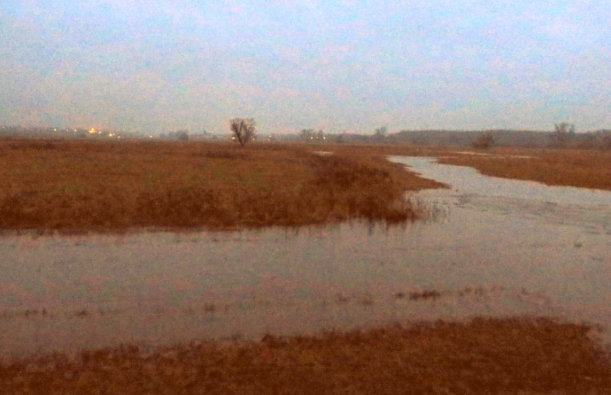
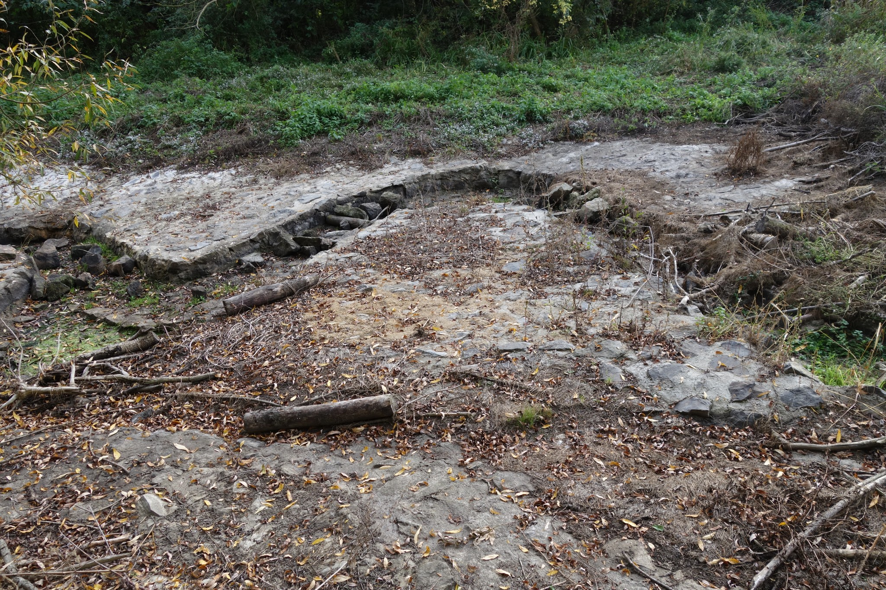
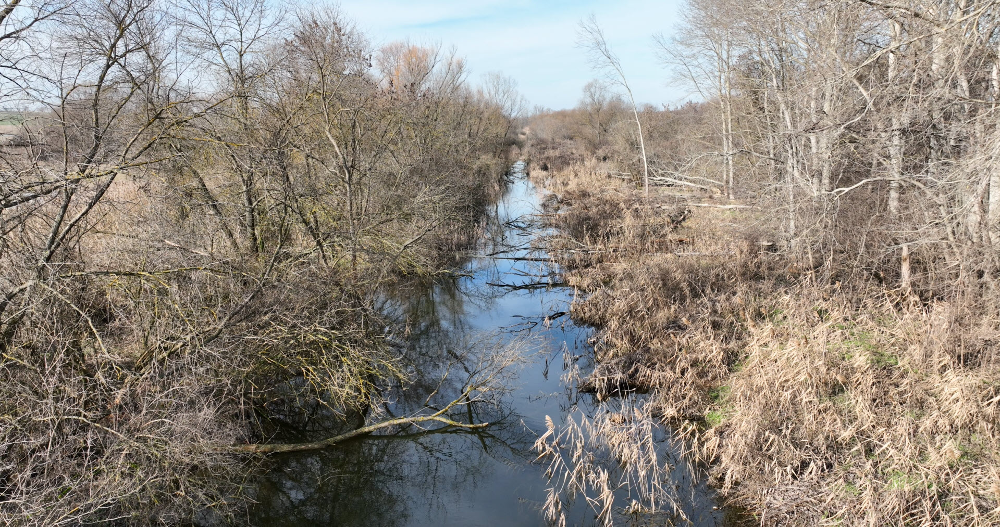
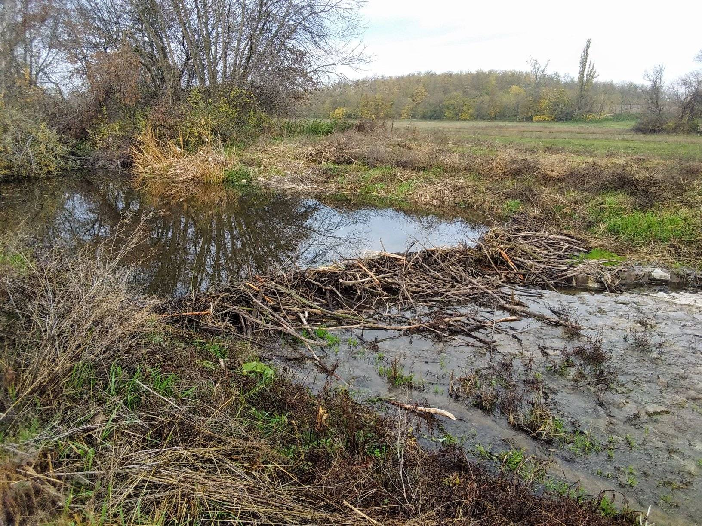
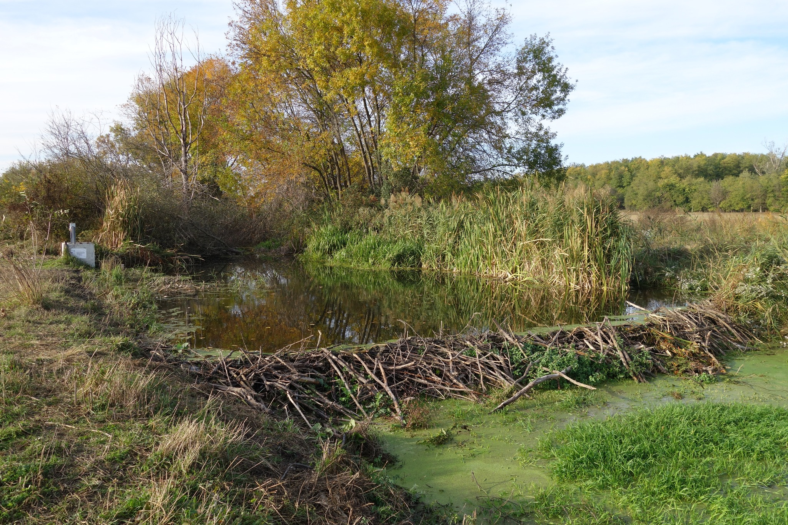
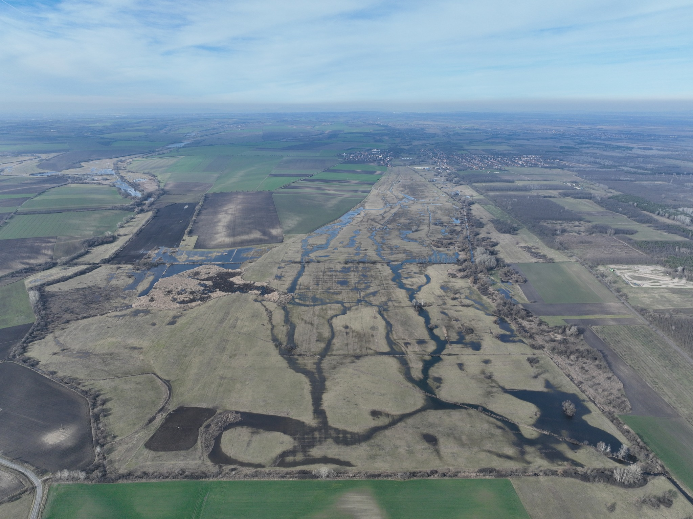
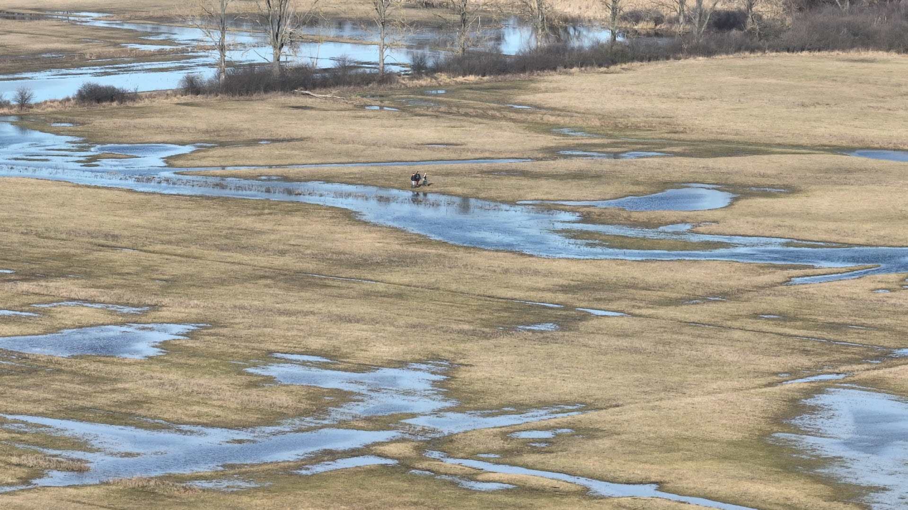
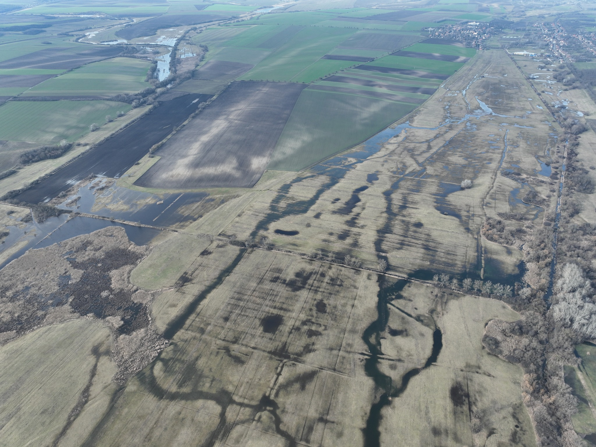

Additional photographs from the Alsó-Tápió river restoration!
Original river course
19th Century near natural status
Grey infrastructure
Beaver enhancement of the cannalised riverbed
 Green Beaver Infrastructure
  Current post-restoration state of the system
Habitat map and key for the site